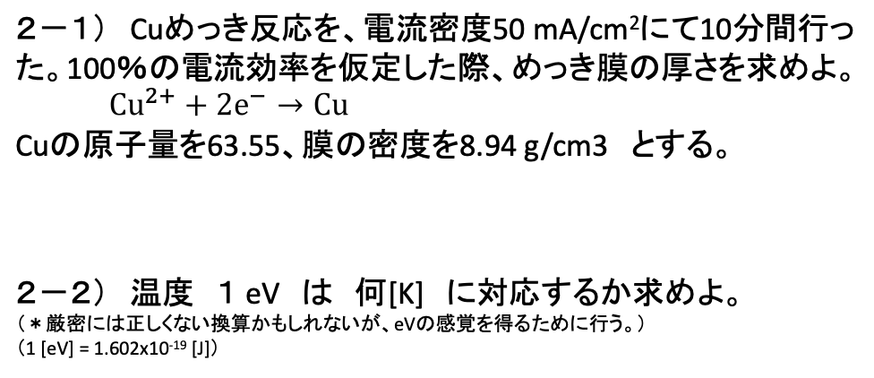
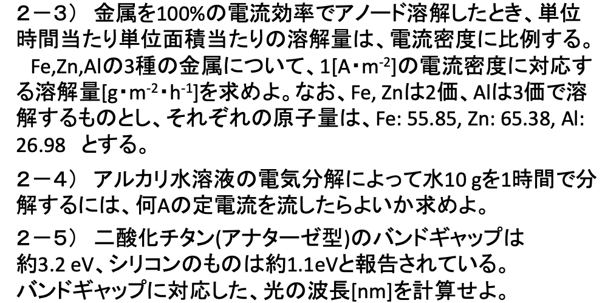
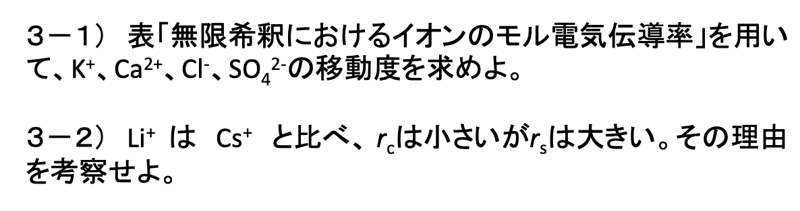
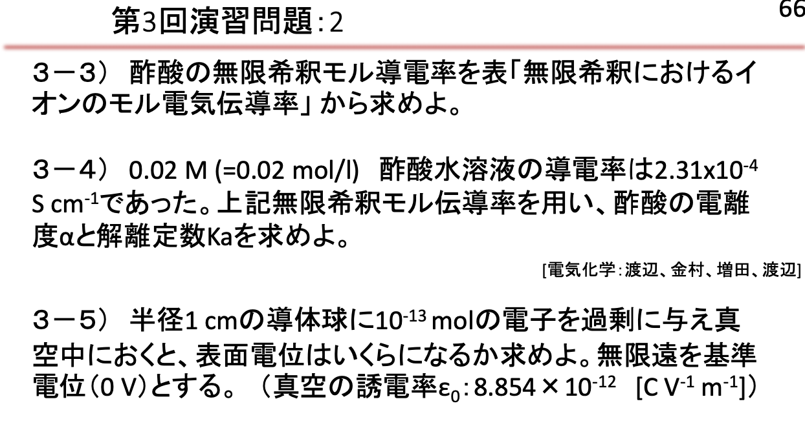

ノート
電位関連の言葉の定義
- アノード反応: 電子を放出する反応
- カソード反応: 電子を受け取る反応
モル電気伝導率
まず、コンダクタンスという言葉を定義する。これは、ある物質が電気を通す能力を表す物理量である。これは、電気伝導率抵抗の逆数である。
\[
G \triangleq \frac{1}{R} = \frac{1}{\rho}\frac{A}{l} = \kappa \frac{A}{l}
\]
次にイオンのモル電気伝導率は次のように決まる。
\[
\Lambda = \frac{\kappa}{c}
\]
ここで、\(\kappa\) はイオンの電気伝導率、\(c\) はイオンの濃度である。
コールラウシュの法則
上のモル電気伝導率は強電解質にて次のような式が成り立つ。
\[
\Lambda = \Lambda^{\infty} - k\sqrt{c}
\]
ここで、\(\Lambda^{\infty}\) は無限希釈時のモル電気伝導率、\(k\) はコールラウシュの定数である。
次に、電解質には特有の守る電気電動率が存在しており、無限希釈時のモル電気伝導率は次のように表される。
\[
\Lambda^{\infty} = v_{+}\lambda_{+}^{\infty} + v_{-}\lambda_{-}^{\infty}
\tag{1}\]
イオンの移動度
\[
\lambda_{\pm}^{\infty} = z_{\pm}F \mu_{\pm}^{\infty}
\tag{2}\]
ここで、\(z_{\pm}\) はイオンの電荷、\(F\) はファラデー定数、\(\mu_{\pm}^{\infty}\) は無限希釈時のイオンの移動速度である。
ストークスの法則
\(r_s\) を球体粒子の半径、\(\eta\) を流体の粘度、\(\rho_s\) を流体密度とする。
まず仮定として、レイノルズ数が2以下の時
\[
Re = \frac{2r_x\rho_f u}{\eta} <2
\]
この時、球体粒子の持つ抵抗力は
\[
6\pi \eta r_s u
\]
になるという。この時、電場が働いている場合、終端速度は
\[
u = \frac{E}{6\pi \eta r_s}
\]
となる。ここでストークス半径はイオン半径とは違って、前者は移動度から計算され、後者は結晶半径から計算される。
輸率
輸率は次のように定義される。
\[
t_{\pm}^{\infty} = \frac{v_{\pm} \lambda_{\pm}^{\infty}}{\Lambda^{\infty}}
\]
希釈律
アレニウスの電離説では
\[
\begin{align*}
K_a &= \frac{c_{\ce{H^+}}c_{\ce{A^-}}}{c_{\ce{HA}}} \\
&= \frac{\alpha^2}{1-\alpha}c_{\ce{HA}}
\end{align*}
\]
などとなっていたが、
\[
\Lambda = \alpha \lambda_{-} + \alpha \lambda_{+} = \alpha \Lambda^{\infty}
\tag{3}\]
と考えることによって、
\[
K_a = \frac{\Lambda^2}{\Lambda^{\infty}(\Lambda^{\infty} - \Lambda)}c
\tag{4}\]
とすることができて、これが希釈溶液ではそれなりに実験値と変わらないようだ。
イオン活量
\[
\begin{aligned}
G &= f(T,P,n_1,n_2,\cdots) \\
\dd G &= \dv{G}{T} \dd T + \dv{G}{P} \dd P + \sum_i \dv{G}{n_i} \dd n_i \\
\end{aligned}
\]
電気化学では多くの場合、温度と圧力が一定なので、
\[
\dd G = \sum_i \left( \pdv{G}{n_i} \right) \dd n_i = \sum_i \mu_i \dd n_i
\]
この時、\(\mu_i\) をイオンの標準化学ポテンシャルという。これは、理想溶液では次のような式に従う。
\[
\mu_i = \mu_i^0 + RT \ln x_i
\]
ここで、 \(x_i\) はモル分率である。ただしこれは理想溶液のみで、実際の溶液では次のような式に従う。
\[
\mu_i = \mu_i^0 + RT \ln a_i
\]
ここで、\(a_i\) はイオンの活量である。これは、次のように定義される。
\[
a_i = \gamma_i x_i
\]
ここで、\(\gamma_i\) は活量係数である。この値は測定困難である。
平均活量係数
1-1型のイオンの平均活量は次のように定義される。
\[
\mu = \mu_+ + \mu_- = \mu_+^0 + \mu_-^0 + RT \ln (a_+a_-)
\]
ここで、電解質の活量は
\[
a = a_+ a_-
\]
イオンの平均活量は \(\sqrt{a}\) となり、平均活量係数は \(\gamma = \sqrt{\gamma_+\gamma_-}=\sqrt{a_+a_-/c^2}\) となる。
\(\nu_+, \nu_-\) 型のイオンの平均活量係数は次のようになる。
\[
\begin{aligned}
\mu &= \nu_+ \mu_+^0 + \nu_- \mu_-^0 + RT \ln (a_+^{\nu_+}a_-^{\nu_-})\\
a &= a_+^{\nu_+}a_-^{\nu_-}\\
a_{\pm} &= (a_+^{\nu_+}a_-^{\nu_-})^{1/(\nu_+ + \nu_-)}\\
\gamma_{\pm} &= (a_+^{\nu_+}a_-^{\nu_-})^{1/(\nu_+ + \nu_-)}/c\\
&= a_{\pm}/c
\end{aligned}
\]
ここで注意すべきなのは、平均は \(\nu_-+\nu_+\) で平均化すること。
デバイ・ヒュッケルの法則
要するに、ボルツマン分布でイオンを考えて、それとポアソンの法則を組み合わせると、イオンの平均活量係数が求まる。
ボルツマン分布でイオン内のイオン分布次のようになる。
\[
n_i^{'} = n_i \exp \left( -\frac{z_ie\phi(r)}{kT} \right)
\]
ここで、\(n_i^{'}\) はイオンの濃度、\(n_i\) は無限遠における密度、\(z_i\) はイオンの電荷、\(e\) は電子の電荷、\(\phi(r)\) は電位、\(k\) はボルツマン定数、\(T\) は温度である。
各種イオンに対してこれが成り立つので、電荷密度は次のようになる。
\[
\rho(r) = \sum_i z_i e n_i \exp \left( -\frac{z_ie\phi(r)}{kT} \right)
\]
これを一次近似すると、0次の項が消えて、1次の項だけが残る。
\[
\rho(r) = -\frac{e^2\phi (r)}{kT} \left( \sum_i n_i z_i^2 \right) = -\frac{2 e^2}{kT} \left( \sum_i \frac{1}{2} n_i z_i^2 \phi (r) \right)
\]
ここで、ガウスの法則のポテンシャルの方の式を考えて、
\[
\nabla^2 \phi = -\frac{\rho}{\varepsilon} = -\frac{\rho}{\epsilon_0 \epsilon_r}
\]
これらを合わせて、
\[
\nabla^2 \phi = \frac{1}{\epsilon_0 \epsilon_r} \frac{2e^2}{kT} \left( \sum_i \frac{1}{2} n_i z_i^2 \right) \phi
\]
これはヘルムホルツ方程式 \(\nabla^2 \phi = \frac{\phi}{\lambda_D^2}\) と呼ばれる偏微分方程式で、解が
\[
\phi = \dfrac{A}{r} \exp\left(-\frac{r}{\lambda_D}\right) + \dfrac{B}{r} \exp\left(\frac{r}{\lambda_D}\right)
\]
になるんだが、この時の \(\lambda_D\) がデバイ・ヒュッケル長さである。
\[
\lambda_D = \qty(\dfrac{2e^2}{\epsilon_0 \epsilon_r kT} \sum_i \frac{1}{2} c_i z_i^2)^{-1/2}
\]
実際に解いていくと次のようになる。
\[
\phi(r) = \frac{ze}{4 \pi \epsilon_0 \epsilon_r} \exp\left(-\frac{r}{\lambda_D}\right)
\]
\[
\rho (r) = -\frac{ze}{4\pi \lambda_D^2 r}\exp\left(-\frac{r}{\lambda_D}\right)
\]
となる。ここでさらに電位を展開すると、
\[
\phi(r) = \frac{ze}{4\pi \epsilon_0 \epsilon_r r} - \frac{ze}{4\pi \epsilon_0 \epsilon_r \lambda_D}
\]
この第一項は中心電荷による電位で、第二項はイオン相互作用による電位である。
次に充電することを考える。中心電化による電位は考えなくてもいいので、
\[
W = N_A \int_0^{ze} - \frac{ze}{4\pi \epsilon_0 \epsilon_r \lambda_D} \dd ze = -N_A \frac{(ze)^2}{8\pi \epsilon_0 \epsilon_r \lambda_D}
\]
理想溶液と実在溶液の化学ポテンシャルの差は
\[
\Delta \mu = \mu_i^0 +RT \ln a_i - (\mu_i^0 + RT \ln x_i) = RT \ln \gamma_i
\]
これらがつながるので、ごちゃごちゃした計算を略すと
\[
\ln \gamma_i = -z^2\frac{1}{8\pi}\left(\frac{2N_A}{1000}\right)^{1/2}\left(\frac{e^2}{\epsilon_0\epsilon_r kT}\right)^{3/2}\left(\sum_i \frac{1}{2}c_iz_i^2\right)^{1/2}
\]
これを次のように記述する。
\[
\ln \gamma_i = -A^{\ast}z^2 I^{1/2}
\tag{5}\]
\[
I \triangleq \sum_i \frac{1}{2}c_iz_i^2
\tag{6}\]
で、イオン強度と呼ばれる。この式を代入することによって、平均活量計数が求められる。
\[
\begin{aligned}
\ln \gamma_{\pm} & = \frac{1}{\nu_++\nu_-}\left( \nu_+ \ln \gamma_+ + \nu_- \ln \gamma_- \right)\\
& = \frac{-A^{\ast}}{\nu_++\nu_-} \left( \nu_+ z_+^2 I^{1/2} + \nu_- z_-^2 I^{1/2} \right)\\
&= A^{\ast} z_+ z_- I^{1/2}
\end{aligned}
\]
これをデバイ・ヒュッケルの極限法則という。ただし、これはイオン直径が高い時と、濃度が高い場合に問題になってくるので、その補正を入れると、
\[
\ln \gamma_{\pm} = \frac{A^{\ast}z_+z_-I^{1/2}}{1+BaI^{1/2}} + bI
\]
となる。ここで、\(B\) はイオンの直径に関するパラメータで、 \(a\) はイオンの半径である。
ここまでで大事な式は次のようになる。
イオン強度
\[
I = \frac{1}{2} \sum_i c_iz_i^2
\]
デバイ・ヒュッケルの極限法則
\[
\ln \gamma_{\pm} = A^{\ast} z_+ z_- I^{1/2}
\]
ただし、
\[
A^{\ast} = \frac{1}{8\pi}\qty(\frac{2N_A}{1000})^{1/2}\left(\frac{e^2}{\epsilon_0\epsilon_r kT}\right)^{3/2}
\]
この値の \(25^{\circ}\symup{C}\) における値は \(0.509\) である。
これまでは希釈溶液の話だったが、濃度が高い時含めて拡張した式として
\[
\ln \gamma_{\pm} = \frac{A^{\ast}z_+ z_- I^{1/2}}{1+BaI^{1/2}} + bI
\]
ネルンストの式
イオンの電気化学ポテンシャルは次の式で表される。
\[
\mu_i = \mu_i^0 + RT \ln a_i + z_i F \phi
\]
ここで、\(\mu_i^0\) は標準電気化学ポテンシャル、\(a_i\) は活量、\(z_i\) はイオンの電荷、\(F\) はファラデー定数、\(\phi\) は電位である。
ここで酸化体、還元体の電気化学ポテンシャルを考えると、
\[
\ce{Ox^{z+}} + ne^- \ce{<=> Red^{(z-n)+}}
\]
\[
\begin{aligned}
\mu_{\ce{Ox}} &= \mu_{\ce{Ox}}^{O} + RT \ln a_{\ce{Ox}} + z_i F \phi_{Liq} \\
\mu_{\ce{Red}} &= \mu_{\ce{Red}}^{O} + RT \ln a_{\ce{Red}} + (z-n)F \phi_{Liq} \\
\mu_{e^-} &= \mu_{e^-}^{O} + RT \ln a_{e^-} - F \phi_{M}
\end{aligned}
\]
となる。ここで注意すべきは、\(\phi_{Liq}\) と \(\phi_{M}\) はそれぞれ溶液と電極の電位である。このような状態が平衡に達しているとき、
\[
\mu_{\ce{Ox}} + n\mu_{e^-} = \mu_{\ce{Red}}
\]
となる。これを整理すると、
\[
\Delta \phi = \phi_{M} - \phi_{Liq} = \frac{\mu_{\ce{Ox}} + n\mu_{e^-} - \mu_{\ce{Red}}}{nF} + \frac{RT}{nF} \ln \frac{a_{\ce{Ox}}}{a_{\ce{Red}}}
\]
となる。ここで、 \(\Delta G^O = -(\mu_{\ce{Ox}} + n\mu_{e^-} - \mu_{\ce{Red}})\) で、 \(E^O = - \Delta G^O/nF\) と標準電位を定義して整理すると、
\[
\Delta \phi = E^O + \frac{RT}{nF} \ln \frac{a_{\ce{Ox}}}{a_{\ce{Red}}}
\tag{7}\]
となる。これをネルンストの式という。ただし、ネルンストの式と呼ばれているものは数種類以上存在しているらしく、そこらの混乱について端的にわかりやすい解説はここにある。
演習問題

2.1
50 \(\symup{mA/cm}^2\) で10分間電流を流すと、合計で 30 \(\symup{C/cm}^2\) の電荷が流れる。これは、1 \(\symup{cm}^2\) の面積につき 30 \(\symup{C}\) の電荷が流れたことを意味する。
1 \(\symup{mol}\) の電子は \(eN_A = 96485 \symup{C/mol}\) の電荷を持つので、1 \(\symup{cm}^2\) の面積につき 30 \(\symup{C}\) の電荷が流れることは、\(30/96485 = 3.1 \times 10^{-4} \symup{mol}\) の電子が流れたことを意味する。つまり、\(1.6 \times 10^{-4} \symup{mol}\) の \(\ce{Cu}\) が生成したことになるわけで、これの重量は、\(1.6 \times 10^{-4} \times 63.5 = 1.0 \times 10^{-2} \symup{g}\) である。
膜の密度が \(8.94 \symup{g/cm^3}\) であることを考慮すると、面積あたりの生成量である \(1.0 \times 10^{-2} \symup{g/cm^2}\) で割ってやれば、 \(1.1 \times 10^{-3} \symup{cm} = 1.1 \symup{\mu m}\) となる。
2.2
\(1 \symup{eV}\) とは、\(1.6 \times 10^{-19} \symup{J}\) である。このエネルギーを内部運動エネルギーに持つ何らかの粒子群の温度は、３次元運動として考えれば、\(\frac{3}{2}k_BT = 1.6 \times 10^{-19} \symup{J}\) となる。ここで、\(k_B = 1.38 \times 10^{-23} \symup{J/K}\) である。これを解くと、\(T = 7.7 \times 10^3 \symup{K}\) となる。
ただし厳密的には、 \(1 \symup{eV} = k_BT\) から、 \(T= 1.16 \times 10^4 \symup{K}\) となる。これについては理解できるまでに時間がかかりそうだ。

2.3
これについては 2.1 と同じ計算を行うことになる。
\(1 \symup{A \cdot m^{-2}}\) によって流れる電気量は \(1/96485 = 1.036 \times 10^{-5} \symup{mol \cdot m^{-2} \cdot s^{-1}}\) である。これに \(\ce{Fe, Zn, Al}\) のそれぞれの価数で割って、原子量で掛けることで、それぞれの生成質量の速度を求めることができる。
Show Code
import numpy as np
# 定数
F = 96485 # C/mol
molar_charge = 1 / F # mol/C
# 各金属の価数と原子量
metals = {
'Fe': {'valence': 2, 'molar_mass': 55.85},
'Zn': {'valence': 2, 'molar_mass': 65.38},
'Al': {'valence': 3, 'molar_mass': 26.98}
}
# 電流密度
current_density = 1 # A/m^2
# 各金属の生成質量の速度を計算
for metal, properties in metals.items():
valence = properties['valence']
molar_mass = properties['molar_mass']
# 電気量
charge_per_m2 = current_density * molar_charge # mol/m^2/s
# 生成質量の速度
mass_production_rate = charge_per_m2 * molar_mass / valence # g/m^2/s
print(f"{metal}: {mass_production_rate:.3e} g/m^2/s")
Fe: 2.894e-04 g/m^2/s
Zn: 3.388e-04 g/m^2/s
Al: 9.321e-05 g/m^2/s
2.4
水 \(10 \symup{g}\) を電気分解するには、\(10/18 \times 2 = 1.12 \symup{mol}\) の電子が必要で、$ 1 $ で \(1/96485 = 1.036 \times 10^{-5} \symup{mol/s}\) の電子が流れるので、 \(3600 \symup{s}\) で完全に電気分解するには、 \(1.12/(1.036 \times 10^{-5} \times 3600) = 30 \symup{A}\) が必要である。
2.5
\(E= hc/\lambda\) なので、 \(\lambda = hc/E\) となる。これを \(\symup{eV}\) に変換すると、 \(\lambda = 1240/E\) となる。これを用いて、 \(\lambda = 1240/1.1 = 1127 \symup{nm}\) となる。次に、 \(\lambda = 1240/3.2 = 387 \symup{nm}\) となる。

3.1
イオン移動度の式は (Equation 2) だから、
Show Code
# 定数
F = 96485 # C/mol
# 各物質のイオンモル伝導率
metals = {
'K+': {'z': 1, 'lambda': 73.5},
'Ca2+': {'z': 2, 'lambda': 119},
'Cl-': {'z': 1, 'lambda': 76.35},
'SO42-': {'z': 2, 'lambda': 160},
}
# 各物質のイオン移動度を計算
for metal, properties in metals.items():
z = properties['z']
lambda_ = properties['lambda']
# イオンモル伝導率
ion_mobility = lambda_ / z / F # m^2/V/s
print(f"{metal}: {ion_mobility:.3e} m^2/V/s")
K+: 7.618e-04 m^2/V/s
Ca2+: 6.167e-04 m^2/V/s
Cl-: 7.913e-04 m^2/V/s
SO42-: 8.291e-04 m^2/V/s
3.2
ストークス半径は流体中の水和イオンの見かけ上の大きさで、イオン半径は結晶中のイオンの大きさである。
\(\ce{Li+}\) は \(\ce{Cs+}\) に比べて電荷密度が高く、水和が強いために \(r_s\) が大きくなる。逆に、 \(\ce{Cs+}\) は電荷密度が低く、水和が弱いために \(r_s\) が小さくなる。

3.3
この式 (Equation 1) を用いて、 \(\ce{CH3COOH}\) のモル電気伝導率を求める。
\[\Lambda^{\infty}[\ce{CH3COOH}] = 349.82 + 40.9 = 390.7 \ \text{S}\text{m}^2\text{mol}^{-1}\]
3.4
式 (Equation 4) を用いる。
Show Code
# 定数
c = 0.02 # mol/L
lambda_infinity = 390.7e-4 # S m^2 mol^-1
lambda_ = 2.31e-5 / c # S m^2 mol^-1
# 酢酸の電離度と電離定数を計算
alpha = lambda_ / lambda_infinity
Ka = (lambda_**2) / (lambda_infinity * (lambda_infinity - lambda_)) * c
print(f"電離度: {alpha:.3f}")
print(f"電離定数: {Ka:.3e} mol/L")
電離度: 0.030
電離定数: 1.801e-05 mol/L
4.1
\(\ce{NaCl}\) を 0.1 M、\(\ce{Al2(SO4)3}\) を 0.01 M 含む水溶液（どちらも \(\alpha = 1\) とする）のイオン強度は何 M になるか。 また、そのうち \(\ce{NaCl}\) の分担割合は何 % かもとめよ。
イオン強度の定義式は (Equation 6) である。
ここで、\(c_i\) はイオンの濃度、\(z_i\) はイオンの電荷数というのを注意！ イオン濃度じゃなくて、水溶液濃度で計算してハマったのでまじで注意。
Show Code
# 定数
c_Na = 0.1 # mol/L
c_Cl = 0.1 # mol/L
c_Al2 = 0.02 # mol/L
c_SO4 = 0.03 # mol/L
z_Na = 1
z_Cl = -1
z_Al = 3
z_SO4 = -2
# イオン強度の計算
I = 0.5 * (c_Na * z_Na**2 + c_Cl * z_Cl**2 + c_Al2 * z_Al**2 + c_SO4 * z_SO4**2)
print(f"イオン強度: {I:.3f} M")
# 分担割合の計算
fraction_NaCl = (c_Na * z_Na**2 + c_Cl * z_Cl**2) / (c_Na * z_Na**2 + c_Cl * z_Cl**2 + c_Al2 * z_Al**2 + c_SO4 * z_SO4**2)
print(f"分担割合: {fraction_NaCl:.3%}")
イオン強度: 0.250 M
分担割合: 40.000%
4.2
\(\ce{CaCl2}\) 水溶液（強電解質溶液：\(25^{\circ}\symup{C}\)）の、0.001 M および 0.01 M における イオン強度とデバイ半径を計算せよ。
デバイ半径は次のように定義される。
\[
\begin{aligned}
\lambda_D &= \qty(\dfrac{2e^2}{\epsilon_0 \epsilon_r kT} \sum_i \frac{1}{2} c_i z_i^2)^{-1/2} \\
&= \qty(\dfrac{2e^2}{\epsilon_0 \epsilon_r kT} I_n)^{-1/2}
\end{aligned}
\]
ここで、 \(n_i\) はイオン濃度。ただし単位は \(\symup{mol\ m^{-3}}\) ではなく、 \(\symup{m^{-3}}\) であることに注意。つまり、 \(N_A\) を掛けてやる必要がある。
Show Code
import numpy as np
# 定数
epsilon_0 = 8.854e-12 # C^2/Jm
epsilon_r = 78.5 # 水の誘電率
k = 1.38e-23 # J/K
T = 298.15 # K
e = 1.6022e-19 # C
Na = 6.022e23 # mol^-1
# イオン濃度
c_Ca = [0.001, 0.01] # mol/L
c_Cl = [0.002, 0.02] # mol/L
n_Ca = [1*Na, 10*Na] # /m^3
n_Cl = [2*Na, 20*Na] # /m^3
# イオン強度の計算
for i in range(len(c_Ca)):
I = 0.5 * (c_Ca[i] * 2**2 + c_Cl[i] * (-1)**2)
print(f"イオン強度: {I:.3f} M")
# デバイ半径の計算
nI = 0.5 * (n_Ca[i] * 2**2 + n_Cl[i] * (-1)**2)
lambda_D = 1 / np.sqrt(2 * e**2 / (epsilon_0 * epsilon_r * k * T) * nI)
print(f"デバイ半径: {lambda_D:.3e} m")
イオン強度: 0.003 M
デバイ半径: 5.553e-09 m
イオン強度: 0.030 M
デバイ半径: 1.756e-09 m
4-3
\(25^{\circ}\symup{C},\ 5.0 \times 10^{-3} \ \symup{M} \ \ce{KCl}\) 水溶液のイオン強度および平均活量係数を、デバイ＝ヒュッケルの極限法則を用いて求めよ。
Show Code
import numpy as np
# 定数
c_k = 5.0e-3 # mol/L
c_cl = 5.0e-3 # mol/L
z_k = 1
z_cl = -1
# デバイ＝ヒュッケルの極限法則
A_star = 1.2 # m^3/2/mol^1/2
# イオン強度の計算
I = 0.5 * (c_k * z_k**2 + c_cl * z_cl**2)
print(f"イオン強度: {I:.3f} M")
# 平均活量係数の計算
gamma = np.exp(-A_star * z_k * z_cl * np.sqrt(I))
print(f"平均活量係数: {gamma:.3f}")
イオン強度: 0.005 M
平均活量係数: 1.089
4-4
\(25^{\circ}\symup{C},\ 5.0 \times 10^{-3} \ \symup{M} \ \ce{CaCl2}\) 水溶液の
イオン強度および平均活量係数を、デバイ＝ヒュッケルの極限法則を用いて求めよ。
Show Code
import numpy as np
# 定数
c_ca = 1.0e-3 # mol/L
c_cl = 2.0e-3 # mol/L
z_ca = 2
z_cl = -1
# デバイ＝ヒュッケルの極限法則
A_star = 1.2 # m^3/2/mol^1/2
# イオン強度の計算
I = 0.5 * (c_ca * z_ca**2 + c_cl * z_cl**2)
print(f"イオン強度: {I:.3f} M")
# 平均活量係数の計算
gamma = np.exp(-A_star * z_ca * z_cl * np.sqrt(I))
print(f"平均活量係数: {gamma:.3f}")
イオン強度: 0.003 M
平均活量係数: 1.140